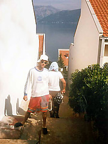
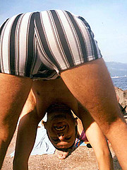
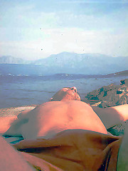
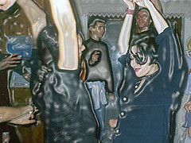

Beograd, 1995
Kiko nas je vratio u 1994, a kako je izgledala jesen devedeset pete?
Te godine gledali smo Dežurne krivce, Se7en, 12 majmuna, Apolo 13, i slušali remek dela kao što su Wowee Zowee od Pavementa (reizdat ove godine!), Washing Machine od SY ili Exit Planet Dust Chemical Brothersa. Iste godine desila se Srebrenica, Krajina, Dejton. U nekom drugom kosmosu u isto vreme došlo je do proširenja EU ulaskom Austrije, Finske i Švedske.
A mi smo po završetku letnjeg raspusta, i posle (manje ili više uspešno) okončanog ispitnog roka odlučili da - odemo na more. Tada je to zapravo bilo dosta jednostavno, nije trebalo usklađivati godišnje odmore i sve druge obaveze, jer te odrednice nisu ni postojale. Ko bi danas uspeo da organizuje pola tuceta tih istih ljudi da početkom oktobra odu na desetodnevni odmor na more mogao bi sebe smatrati jako uspešnim menadžerom.
Vozom do Bara, odatle mini-bus taxijem u zaliv, do fenomenalnog apartmana naše drugarice Naci Žu. Celodnevna zabava izgledala je ovako - jutarnje pecanje, onda doručak na terasi sa pogledom na zaliv, potom odlazak na mol, kupanje, ronjenje, crtanje, slikanje, pisanje... čini mi se da smo imali i nekakvo mini pojačalo u kombinaciji sa walkmanom, a siguran sam da pića i pušića nije nedostajalo. Zapravo, ganja se sušila na mediteranskom suncu i povetarcu i svaki dan bivala sve finija.
Povratak u sivi Beograd posle sunca i mora nije bio jednostavan, tim pre što je nepune dve nedelje potom pao - sneg. Uskoro je u KSTu gostovao Grant Hart, legendarna trećina Hüsker Düa. Taj koncert proveo sam, umesto u prostoru gde se očekuje da bude neko ko je došao na svirku, šetajući pomahnitalo kroz hodnike podruma fakulteta, pokušavajući da sebe koliko-toliko dovedem u ravnotežu izgubljenu zbog letalne kombinacije lakih opijata. I taman kad sam se koliko-toliko sredio, ugledao sam gosn. Šišmiša i... tako. Fleka je u to vreme, čini mi se, bio u izvanrednoj formi, nedeljom od ponoći do tri.
Isto te jeseni, dešavalo se u Rexu nešto što ne mogu da prizovem - jedino se sećam da smo išli do WCa i pripremali se za to nešto kao Bitlsi kad su išli kod kraljice.
Naravno, tada se desio i onaj čuveni, čudni Prodigy koncert (na koji nismo ušli jer nismo imali pare za ulaznice, ali smo bili ispred i ludo se provodili). Deset godina kasnije ista grupa je ponovo svirala u Beogradu. sledi pasus preuzet sa B92 kulture:
“The Prodigy” su 8. decembra 1995. godine održali jedan od prvih većih koncerata u karijeri, pred 10.000 ljudi u beogradskoj hali “Pionir”, što su i sami članovi grupe zapamtili i zbog čega će im ponovni nastup u Beogradu predstavljati sentimentialni događaj.
Četvrta godina arhitekture je inače bila zanimljivija od svih prethodnih, ukinut deo sankcija omogućio je našim košarkašima da ponovo postanu prvaci Evrope, i tak...
Po čemu vi pamtite '95u?
Komentari
Ja se secam otprilike da sam tada izlazio u Prostor u Sarajevskoj, pio pivo ispred dragstora i tako to. Inace se slabo cega secam iz tog perioda...
 Viktor | 26.11.06 02:56
Viktor | 26.11.06 02:56
cini mi se da sam mator kad krenu ova podsecanja, bolje kad se drzim sadasnjosti.
tekton | 27.11.06 09:14
Ja se secam francuskog u Jovanovoj, sa ove distance, bolje da sam ucila salsu, shivenje ili masazu. Secam se i letovanja u Njivicama.
La Lara | 27.11.06 12:18
 RSS feed
RSS feed
 sadržaji se objavljuju pod
sadržaji se objavljuju pod
Ja evo vec par sati pokusavam da skontam koja je to godina bila i ne mogu. Parametri su mi ovi: koja sam godina na faksu bila s kim sam se zabavljala i ne znam.
KittenSmitten | 25.11.06 08:26